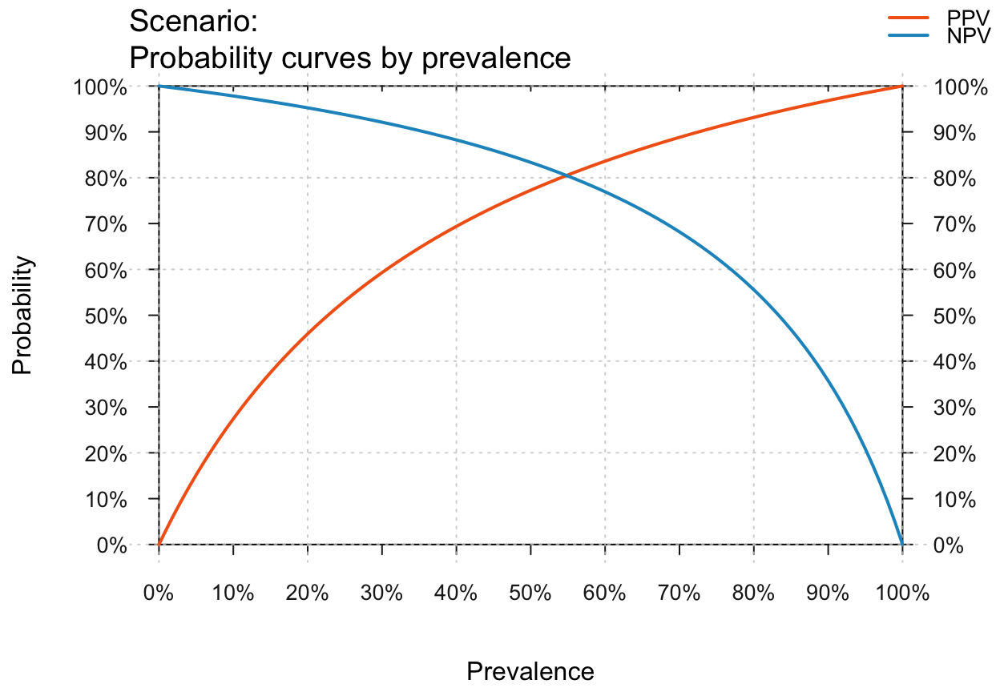
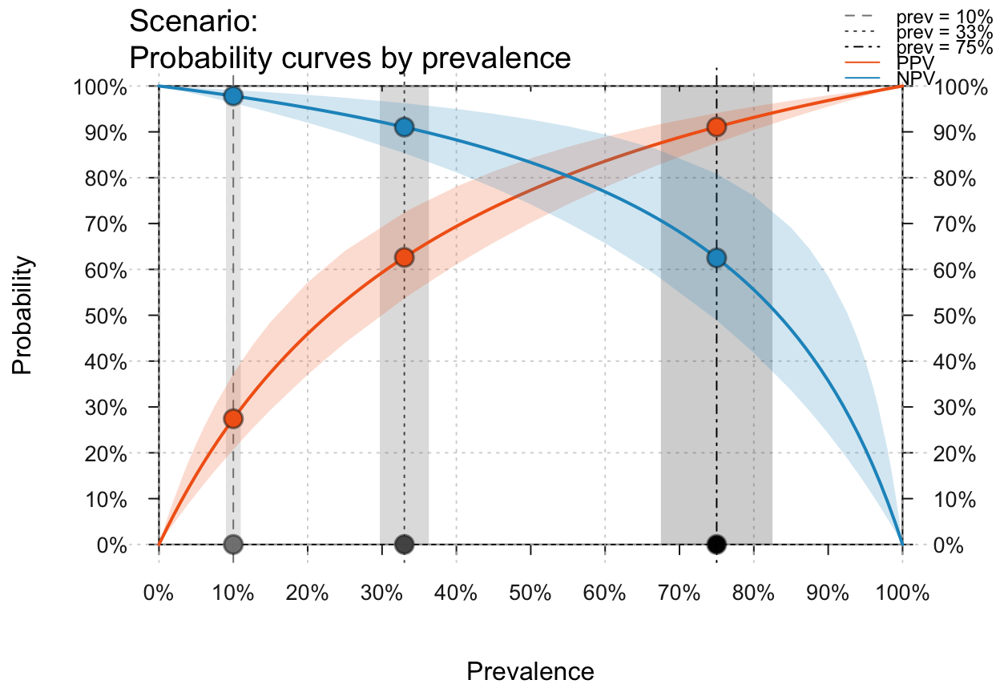
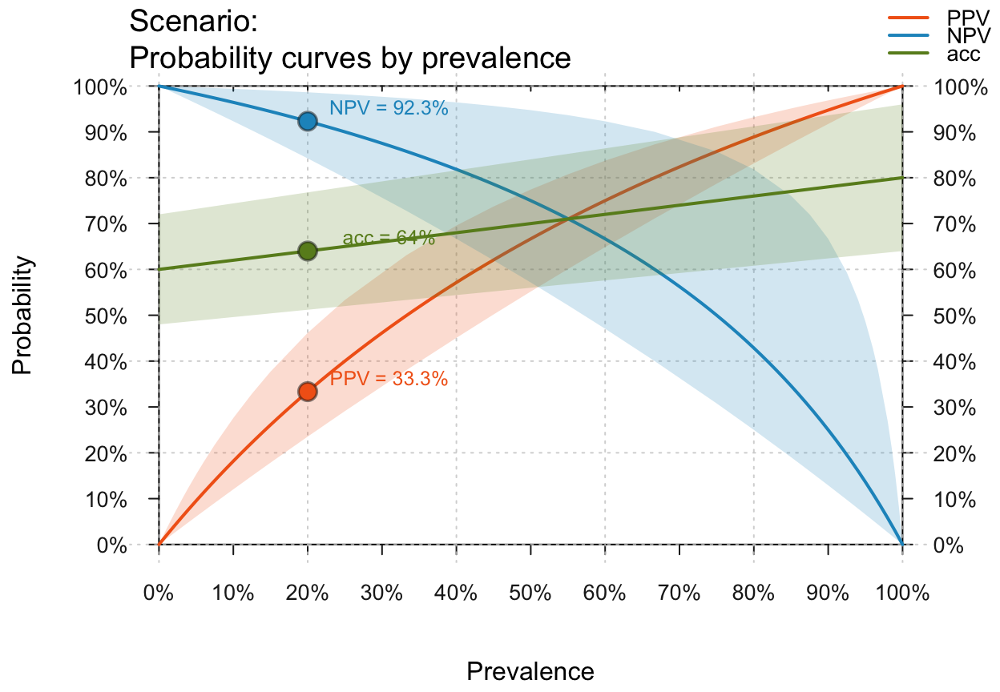
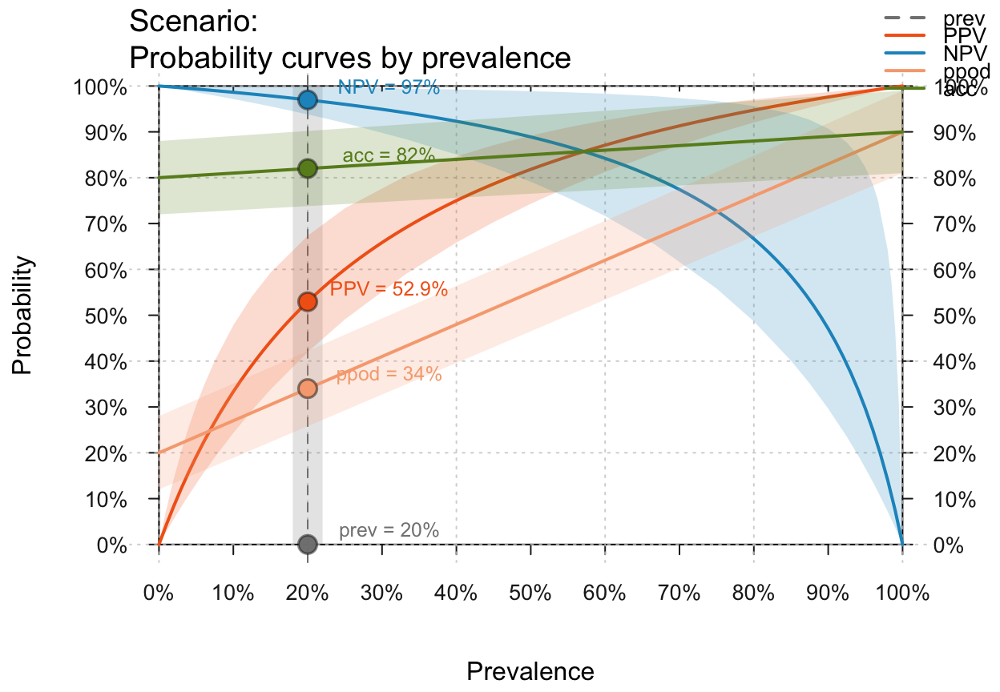
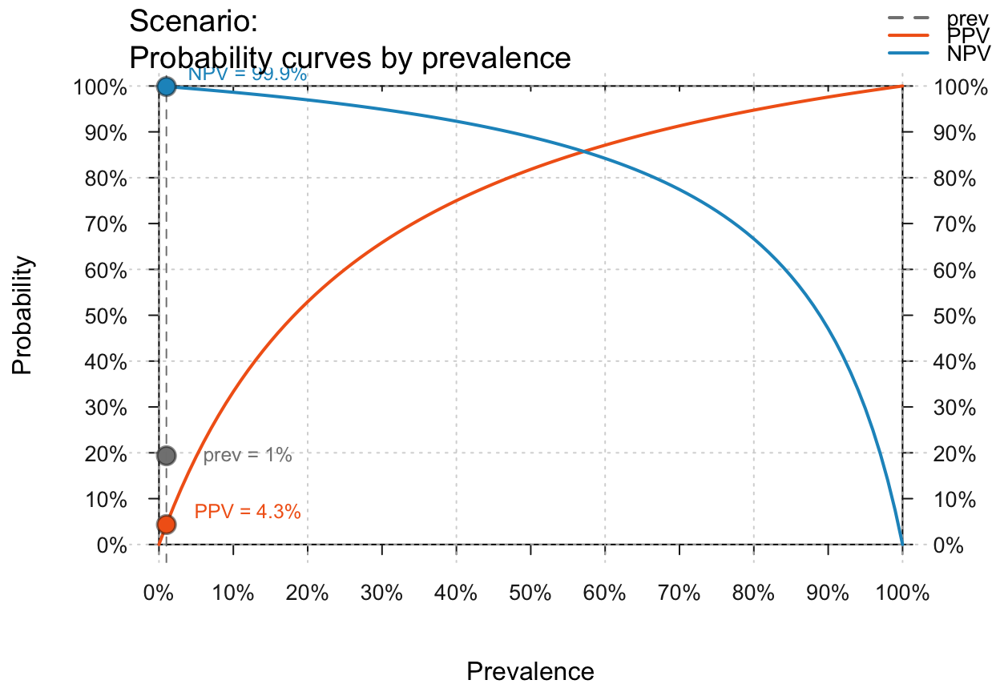
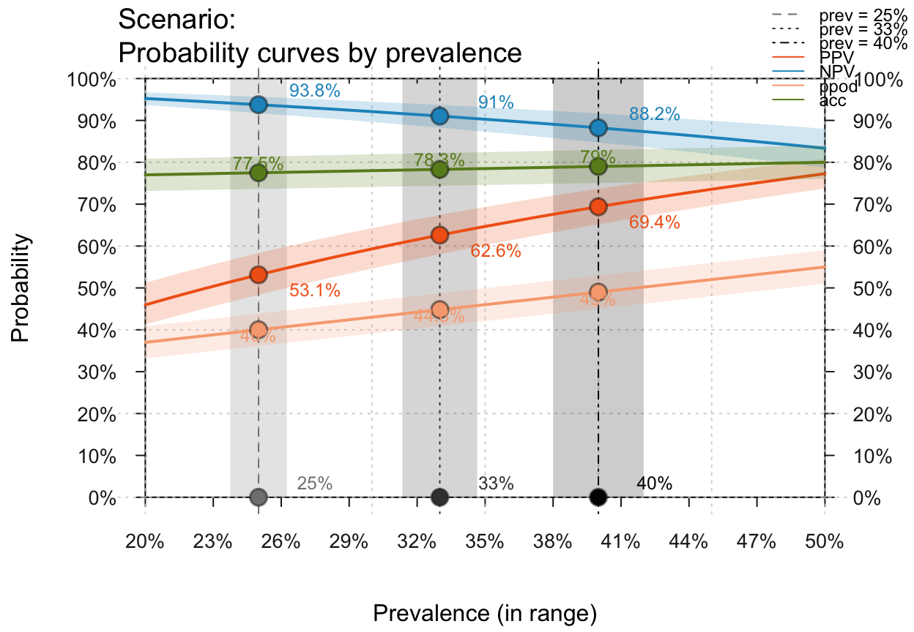
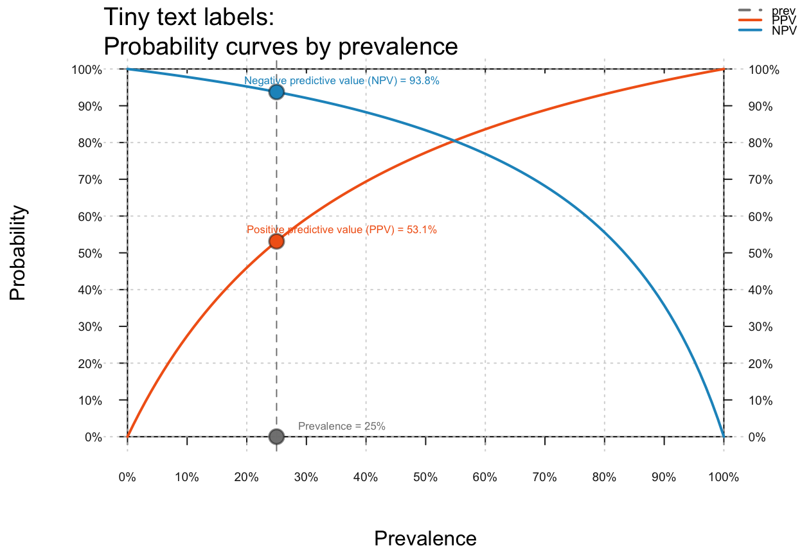
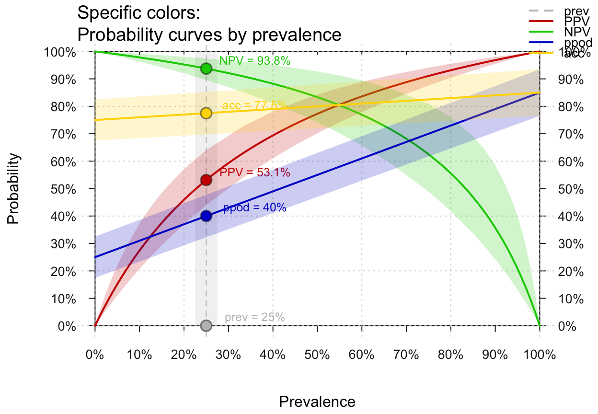
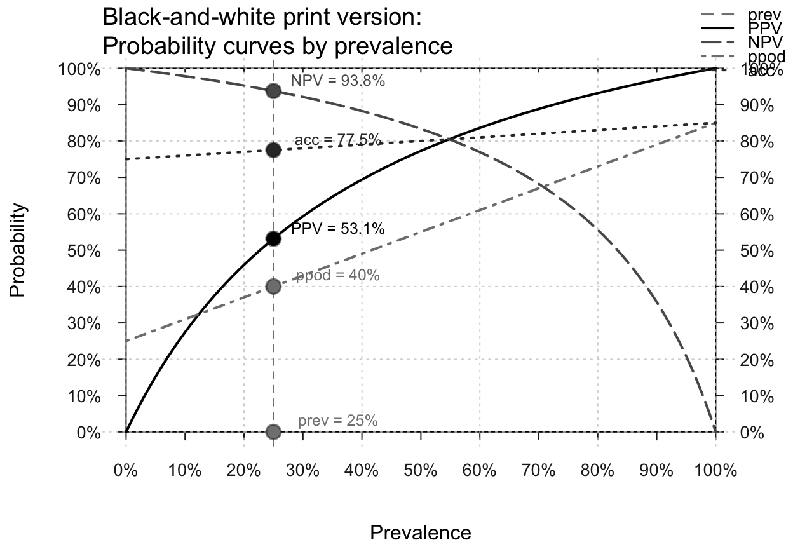

Plot curves of selected values (e.g., PPV or NPV) as a function of prevalence.
Source:R/plot_curve.R
plot_curve.Rdplot_curve draws curves of selected values
(including PPV, NPV)
as a function of the prevalence (prev)
for given values of
sensitivity sens (or
miss rate mirt) and
specificity spec (or
false alarm rate fart).
plot_curve(prev = num$prev, sens = num$sens, mirt = NA, spec = num$spec, fart = NA, what = c("prev", "PPV", "NPV"), p_lbl = "def", p_lwd = 2, what_col = pal, uc = 0, show_points = TRUE, log_scale = FALSE, prev_range = c(0, 1), lbl_txt = txt, title_lbl = NA, cex_lbl = 0.85, col_pal = pal, mar_notes = TRUE, ...)
Arguments
| prev | The condition's prevalence |
|---|---|
| sens | The decision's sensitivity |
| mirt | The decision's miss rate |
| spec | The decision's specificity |
| fart | The decision's false alarm rate |
| what | Vector of character codes that specify the
selection of curves to be plotted. Currently available
options are |
| p_lbl | Type of label for shown probability values, with the following options:
|
| p_lwd | Line widths of probability curves plotted.
Default: |
| what_col | Vector of colors corresponding to the elements
specified in |
| uc | Uncertainty range, given as a percentage of the current
|
| show_points | Boolean value for showing the point of
intersection with the current prevalence |
| log_scale | Boolean value for switching from a linear
to a logarithmic x-axis.
Default: |
| prev_range | Range (minimum and maximum) of |
| lbl_txt | Labels and text elements.
Default: |
| title_lbl | Main plot title.
Default: |
| cex_lbl | Scaling factor for the size of text labels
(e.g., on axes, legend, margin text).
Default: |
| col_pal | Color palette (if what_col is unspecified).
Default: |
| mar_notes | Boolean value for showing margin notes.
Default: |
| ... | Other (graphical) parameters. |
Details
If no prevalence value is provided (i.e., prev = NA),
the desired probability curves are plotted without showing
specific points (i.e., show_points = FALSE).
Note that a population size N is not needed for
computing probability information prob.
(An arbitrary value can be used when computing frequency information
freq from current probabilities prob.)
plot_curve is a generalization of
plot_PV (see legacy code)
that allows plotting additional dependent values.
See also
comp_prob computes current probability information;
prob contains current probability information;
comp_freq computes current frequency information;
freq contains current frequency information;
num for basic numeric parameters;
txt for current text settings;
pal for current color settings.
Other visualization functions: plot.riskyr,
plot_area, plot_bar,
plot_fnet, plot_icons,
plot_mosaic, plot_plane,
plot_prism, plot_tab,
plot_tree
Examples
# Basics: plot_curve() # default curve plot, same as:# plot_curve(what = c("prev", "PPV", "NPV"), uc = 0, prev_range = c(0, 1)) # Showing no/multiple prev values/points and uncertainty ranges: plot_curve(prev = NA) # default curves without prev value (and point) shown#>plot_curve(show_points = FALSE, uc = .10) # curves w/o points, 10% uncertainty range#>#># Provide local parameters and select curves: plot_curve(prev = .2, sens = .8, spec = .6, what = c("PPV", "NPV", "acc"), uc = .2)# Selecting curves: what = ("prev", "PPV", "NPV", "ppod", "acc") = "all" plot_curve(prev = .3, sens = .9, spec = .8, what = "all") # all curves# plot_curve(what = c("PPV", "NPV")) # PPV and NPV plot_curve(what = c("prev", "PPV", "NPV", "acc")) # prev, PPV, NPV, and acc# plot_curve(what = c("prev", "PPV", "NPV", "ppod")) # prev, PPV, NPV, and ppod # Visualizing uncertainty (uc as percentage range): plot_curve(prev = .2, sens = .9, spec = .8, what = "all", uc = .10) # all with a 10% uncertainty range# plot_curve(prev = .3, sens = .9, spec = .8, what = c("prev", "PPV", "NPV"), # uc = .05) # prev, PPV and NPV with a 5% uncertainty range # X-axis on linear vs. log scale: plot_curve(prev = .01, sens = .9, spec = .8) # linear scaleplot_curve(prev = .01, sens = .9, spec = .8, log_scale = TRUE) # log scale# Several small prev values: plot_curve(prev = c(.00001, .0001, .001, .01, .05), sens = .9, spec = .8, log_scale = TRUE)#># Zooming in by setting prev_range (of prevalence values): plot_curve(prev = c(.25, .33, .40), prev_range = c(.20, .50), what = "all", uc = .05)#># Probability labels: plot_curve(p_lbl = "abb", what = "all") # abbreviated namesplot_curve(p_lbl = "nam", what = "all") # names onlyplot_curve(p_lbl = "num", what = "all") # numeric values onlyplot_curve(p_lbl = "namnum", what = "all") # names and values# Text and color settings: plot_curve(title_lbl = "Tiny text labels", p_lbl = "namnum", cex_lbl = .60)plot_curve(title_lbl = "Specific colors", what = "all", uc = .1, what_col = c("grey", "red3", "green3", "blue3", "gold"))plot_curve(title_lbl = "Black-and-white print version", what = "all", col_pal = pal_bwp)